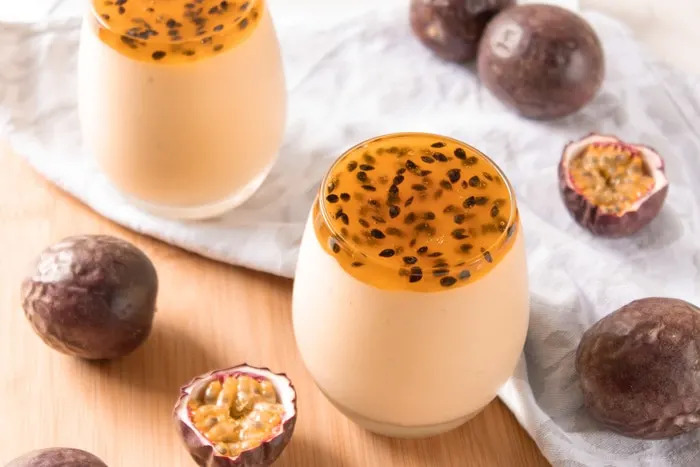

Passion fruit mousse

Time for a refresher: you'll learn how to prepare a delicious passion fruit mousse!
For those who are not familiar with passion fruit, it is a refreshing tropical fruit, pretty popular in south american countries.
It has an citrus-like flavor when fresh, but it becomes sweeter as it ripens.
Well, let's get to the recipe then.
Ingredients
- 2 teaspoons unflavored gelatin
- 3 tablespoons water
- 1 ⅓ cups cold heavy cream,
- 1 can sweetened condensed milk
- 1 cup passion fruit pulp
- ⅓ cup fresh passion fruit pulp with seeds
- ¼ cup sugar
Steps
- Combine the fresh passion fruit pulp and the sugar in a saucepan
- Cook over medium low heat, until the sugar dissolves and the mixture starts boiling
- Lower the heat and continue cooking until it thickens slightly
- Let the it cool to room temperature
- Mix the gelatin and water in a small bowl, until the gelatin is hydrated
- Microwave for 30 seconds for the gelatin to melt and let it cool slightly
- Combine the heavy cream, sweetened condensed milk, passion fruit pulp and melted gelatin in the blender
- Blend for 5 minutes
- Transfer the mousse to a large serving bowl
- Refrigerate for at least 3 hours to set
- Top with the passion fruit sauce